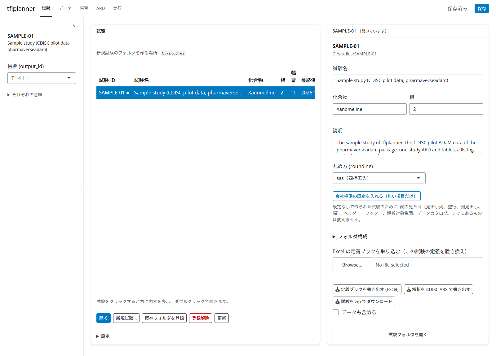
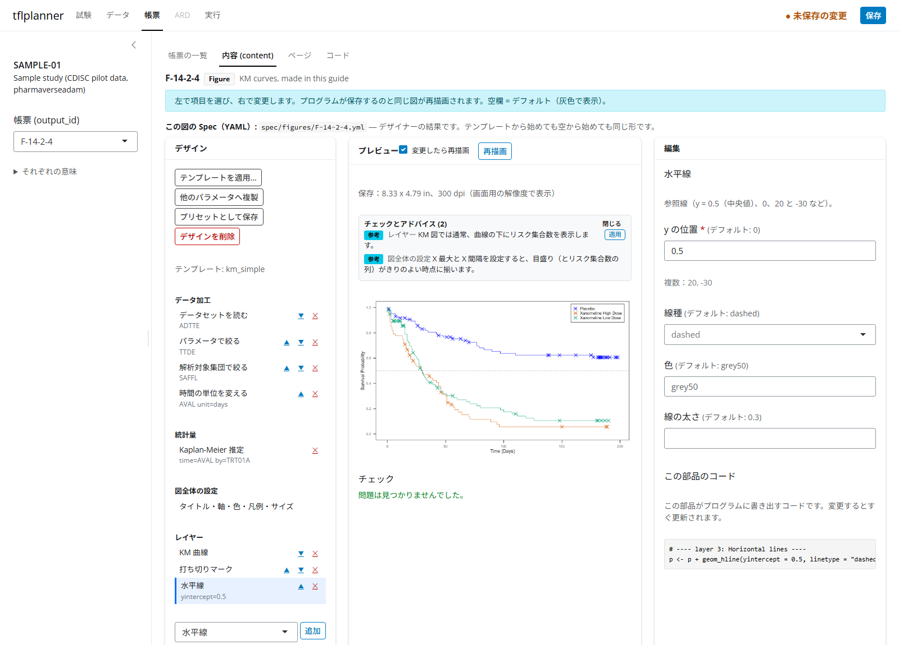
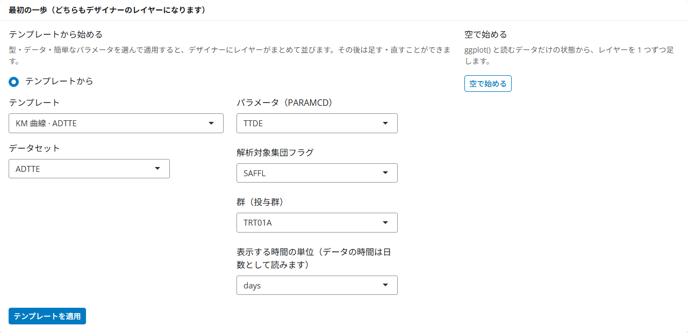
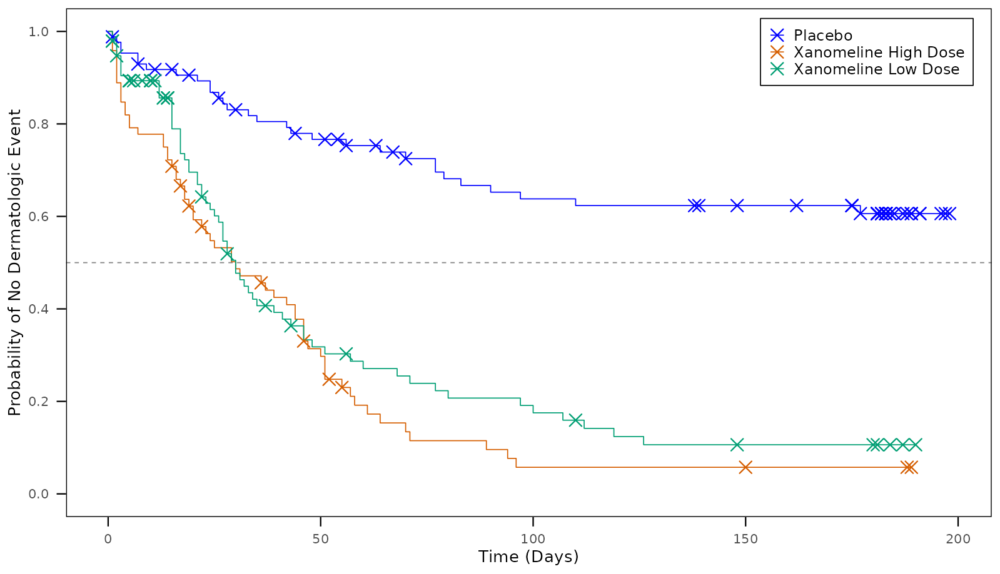
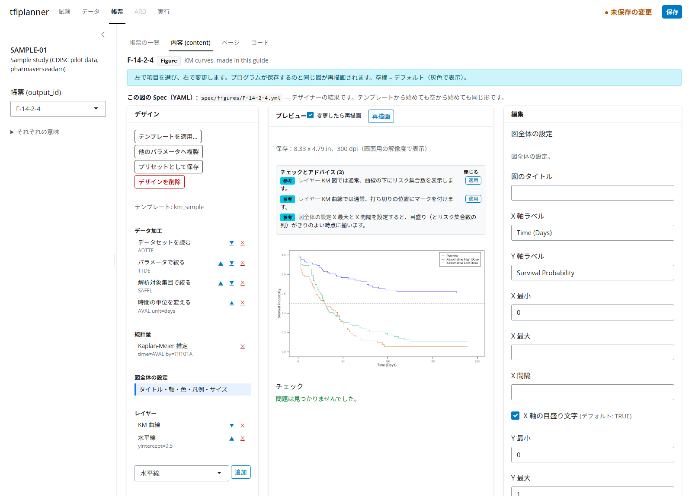
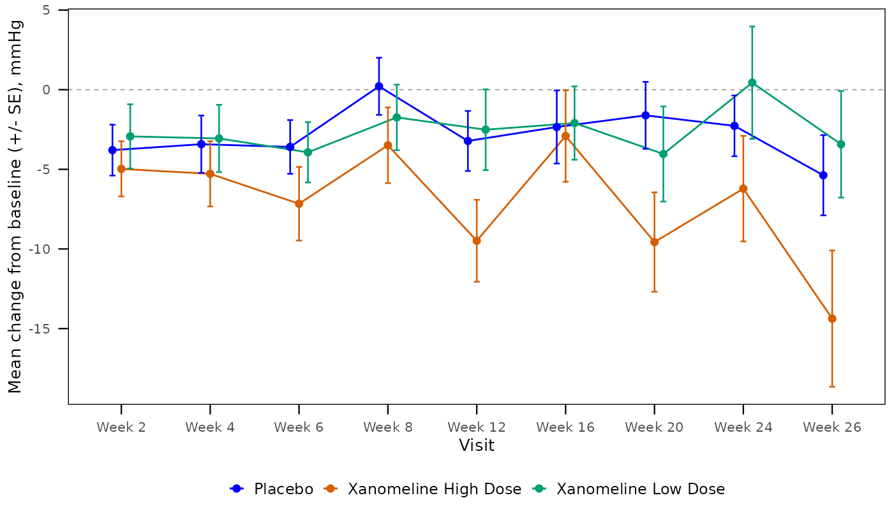
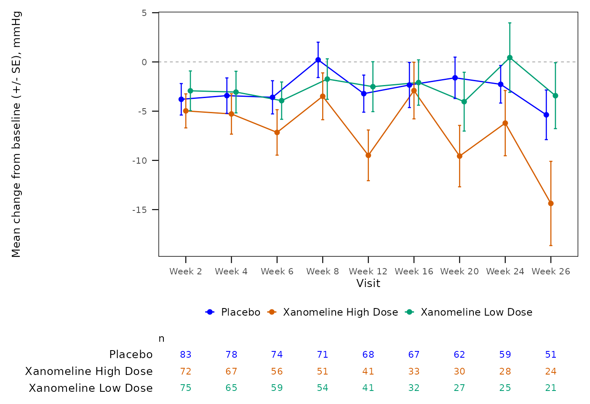
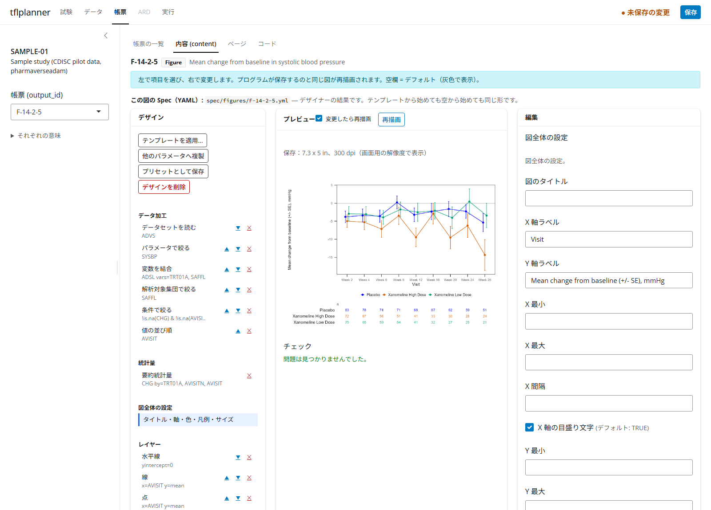
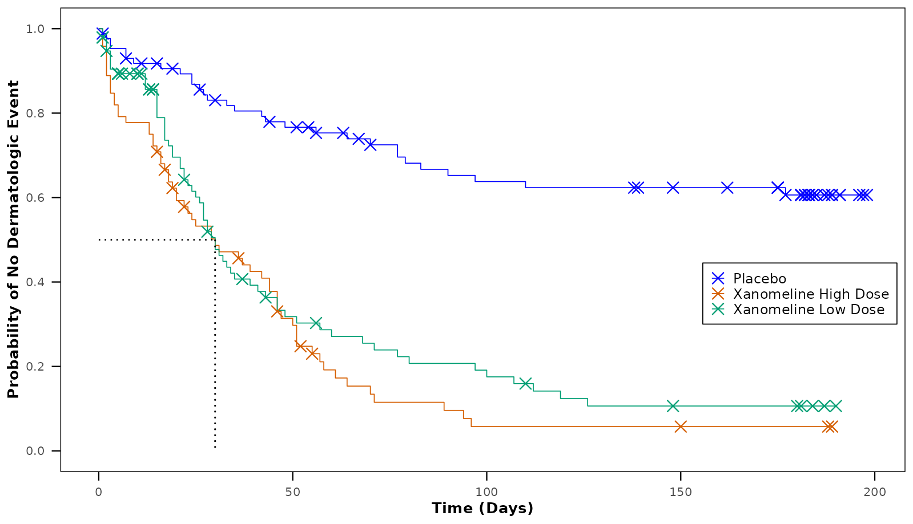

この記事は tflplanner で図（Figure）を作る手順を、サンプル試験を使って一から説明する暫定版の案内です。 tflplanner と tflspec は開発中（experimental）で、画面や関数は変わることがあります。 tflplanner 全体の使い方は「tflplanner 利用ガイド（日本語）」を先に読んでください。
この記事で作るもの
tflplanner の図の作り方は 3 つあります。この記事はこの順に進みます。
| 作り方 | どんなときに | この記事 | サンプル試験の見本 |
|---|---|---|---|
| テンプレートから始め、デザイナーで足す・直す | よくある図（KM、平均の推移、Waterfall など） | 3 章：F-14-2-4 を作る | F-14-2-3（KM 曲線、中央値の破線つき） |
| 空からデザイナーで部品を 1 つずつ組む | 合うテンプレートが無いとき、部品の働きを確かめたいとき | 4 章：F-14-2-5 を作る | ― |
| ユーザーコード（ggplot を自分で書く） | デザイナーで書けない図、既存のプログラムを持ち込むとき | 5 章 | F-14-2-1、F-14-2-2 |
使うのはサンプル試験 SAMPLE-01（CDISC パイロット試験の ADaM、pharmaverseadam）です。 3 章では、サンプルの F-14-2-3 と同じ図を、新しい帳票 F-14-2-4 として自分で作ります。 できあがったら、2 つのデザインが同じになることを確かめます（3.3 節）。
図のデザイン（図 Spec）とは
テンプレートから始めても空から始めても、デザイナーで作った図は 部品を組み合わせたデザイン（図 Spec） になります。 図のデザインは、図を作るための手順を 3 つのパートに分けて並べたものです。 パートの中身は、ひとつひとつ独立した 部品（ピース） です。
| パート | 何を書くか | 部品の例 |
|---|---|---|
data（データ加工） |
ADaM から図に使う行と列を作り、そこから計算する（上から順に） | データセットを読む、PARAMCD を選ぶ、解析対象集団で絞る、ADSL を結合する、時間の単位を変える、Kaplan-Meier 推定、群・来院ごとの平均と SE |
plot（図全体の設定） |
図全体に効く設定 | 軸ラベル、軸の範囲、色の付け方、凡例の位置、図の大きさ |
layers（レイヤー） |
描くものを順に | KM 曲線、打ち切りマーク、線、点、エラーバー、水平線、リスク集合数 |
データ加工の部品のうち、Kaplan-Meier
推定（fit）や要約統計量（sm）のように
自分のオブジェクトを作る部品 があります。
その後ろの部品は、そのオブジェクトの加工として続きます（たとえば要約統計量の後ろの「変数を作る」は
sm に列を足します）。 帳票プログラムでは、データ加工が
# ---- data ----、図の組み立てが
# ---- plot ---- の節になり、 図は
plot <- ggplot(...) + ...
のひとつながりの式で書かれます。
デザインは 1 図 1 つの YAML ファイルとして試験フォルダの
spec/figures/<帳票ID>.yml に保存され、
帳票プログラムはそこから生成される ggplot2 のコードで図を描きます。
同じデザインから、画面（プロットデザイナー）でも R（tflspec
の関数）でも同じコードができるので、 この記事では
画面の操作 と 同じことを R
で行うコード を並べて説明します。 R
のコードはこの記事を作るときに実際に実行しており、図はその結果です。
library(tflspec)
# サンプル試験の ADaM（tflplanner に同梱）
adam_dir <- system.file("sample/SAMPLE-01/data/adam", package = "tflplanner")
adam <- list(
ADSL = readRDS(file.path(adam_dir, "adsl.rds")),
ADTTE = readRDS(file.path(adam_dir, "adtte.rds")),
ADVS = readRDS(file.path(adam_dir, "advs.rds"))
)
# デザインのコードを実行して図を返す（この記事用の小さな関数）
draw <- function(design) {
code <- tfl_fig_design_code(design, "fig")
e <- new.env()
for (n in names(adam)) assign(tolower(n), adam[[n]], envir = e)
owd <- setwd(tempdir())
on.exit(setwd(owd))
suppressMessages(eval(parse(text = code), envir = e))
e$fig
}1. 準備
1.1 インストール
tflplanner、tflspec（図のデザインのエンジン）、rtfreporter（RTF の出力）を GitHub から入れます。 図の描画には ggplot2、ggsurvfit（KM）、patchwork（パネルの組み合わせ）を使います。
install.packages("remotes")
remotes::install_github("ichirio/rtfreporter")
remotes::install_github("ichirio/tflspec")
remotes::install_github("ichirio/tflplanner")
install.packages(c("ggplot2", "ggsurvfit", "patchwork", "survival", "dplyr"))1.2 サンプル試験を追加して開く
初めて使うときは、ホームと試験フォルダの置き場所を決め、サンプル試験を追加します （詳しくは利用ガイドの「2. 環境設定」）。
library(tflplanner)
setup_tflplanner(
studies_root = "C:/studies", # 試験フォルダを作る場所
language = "ja", # 画面を日本語に
sample = TRUE # サンプル試験 SAMPLE-01 を追加する
)
run_app("SAMPLE-01") # サンプル試験を開いてアプリを起動すでに環境がある場合は、アプリの 試験 タブの
設定 にある サンプル試験を追加
を押すか、 create_sample_study() を実行します。
run_app()
を試験を指定せずに起動したときは、試験 タブで SAMPLE-01
をクリックし、 下の 開く
を押します（行のダブルクリックでも開きます）。

2. 図の帳票を足す・プロットデザイナーの画面
2.1 図の帳票を足す
図は、表や Listing と同じく 帳票 タブで作ります。
- 帳票 タブの 帳票の一覧 で、下の 追加 を押す。
-
output_id に
F-14-2-4、種別 に Figure を選び、説明 に「KM curves, made in this guide」などと書いて OK を押す。 - 内容 (content) に切り替わり、「新しい図です」と 最初の一歩 が出る。
最初の一歩 には 2 つの始め方があります。どちらで始めても、できるのは同じ形のデザイン（デザイナーのレイヤー）です。
| 始め方 | 何が起きるか |
|---|---|
| テンプレートから始める | 型・データ・簡単なパラメータを選んで テンプレートを適用 を押すと、データ加工・図全体の設定・レイヤーが一度に入る（3 章） |
| 空で始める |
ggplot() と読むデータだけの状態から、部品を 1
つずつ足す（4 章） |
その下の ユーザーコード（ggplot を自分で書く） を開くと、デザイナーを使わずにコードを書く図になります（5 章）。
2.2 プロットデザイナーの画面
デザインがある図では、帳票 タブの 内容 が 4 つの領域に分かれます。

| 場所 | 名前 | 何をするか |
|---|---|---|
| 左 | デザイン | 部品の一覧。パートごと（データ加工・図全体の設定・レイヤー）に並ぶ。部品をクリックして選ぶ、▲▼ で動かす、✕ で削除する。下の選択欄と 追加 で部品を足す。問題のある部品には印が付く |
| 中 | プレビュー | 帳票プログラムが保存するのと同じ大きさの PNG（上に保存サイズを表示）。変更したら再描画 がオンなら変更のたびに描き直される（オフのときは 再描画 で描く）。図の上に チェックとアドバイス、下に チェック の結果 |
| 右 | 編集 | 左で選んだ部品の項目。空欄は既定値（灰色で表示）。データセット・変数・PARAMCD は試験のデータから選べる。下の この部品のコード に、その部品が書き出すコードが出る |
| 下 | コード / Spec（YAML） | デザイン全体から生成される R コードと、デザインそのもの（保存される YAML） |
デザイン の上のボタン：テンプレートを適用…（今のデザインをテンプレートで置き換える）、 他のパラメータへ複製（同じ図を別の PARAMCD で作る）、 プリセットとして保存（会社の標準の型として残す）、デザインを削除（最初の一歩に戻る）。
3. テンプレートから作り、デザイナーで足す：KM 曲線（F-14-2-4）
サンプルの F-14-2-3 は、KM
曲線のテンプレート（km_simple）から始め、デザイナーで
中央値の破線（y = 0.5 の水平線） を 1 つ足した図です。
同じ手順で F-14-2-4 を作ります。
3.1 テンプレートを適用する
- 2.1 節で足した F-14-2-4 の 内容
で、テンプレートから始める の
テンプレート に「KM 曲線 ·
ADTTE」（
km_simple）を選ぶ。 -
データセット に
ADTTEを選ぶと、そのデータの変数から選べる項目が出る。-
パラメータ（PARAMCD）：
TTDE -
解析対象集団フラグ：
SAFFL -
群（投与群）：
TRT01A -
表示する時間の単位：
days（ADTTE のAVALは日数）
-
パラメータ（PARAMCD）：
- テンプレートを適用 を押す。データ加工・図全体の設定・レイヤーが一度に埋まり、プレビューに図が描かれる （最初の描画はパッケージの読み込みで数秒かかる）。

左の デザイン には、テンプレートが入れた部品が並びます： データ加工に「データセットを読む（ADTTE）→ パラメータで絞る（TTDE）→ 解析対象集団で絞る（SAFFL）→ 時間の単位を変える（days）→ Kaplan-Meier 推定」、 レイヤーに「KM 曲線 → 打ち切りマーク」。
R では tfl_fig_template()
で、同じ選択をそのまま引数にします。
km <- tfl_fig_template(
"km_simple",
data = "ADTTE", # データセット
param = "TTDE", # パラメータ（PARAMCD）
pop = "SAFFL", # 解析対象集団フラグ
group = "TRT01A", # 群
time_unit = "days" # 時間の単位
)
km
#> template: km_simple
#> data:
#> - step: read
#> dataset: ADTTE
#> - step: param
#> value: TTDE
#> - step: flag
#> variable: SAFFL
#> - step: time_unit
#> variable: AVAL
#> unit: days
#> - step: survfit
#> name: fit
#> time: AVAL
#> censor: CNSR
#> by: TRT01A
#> plot:
#> x_label: Time (Days)
#> y_label: Survival Probability
#> colour_by: TRT01A
#> palette: treatment
#> legend: inside
#> x_min: 0.0
#> y_min: 0.0
#> y_max: 1.0
#> y_by: 0.2
#> width: 8.33
#> height: 4.79
#> dpi: 300.0
#> units: in
#> base_size: 10.0
#> theme: boxed
#> layers:
#> - layer: km_curve
#> linewidth: 0.3
#> - layer: censor_mark
#> shape: x
#> size: 3.0
#> stroke: 0.6表示されているのがデザイン（YAML）です。画面の
Spec（YAML） と同じ内容です。 data
の部品が「ADTTE を読む → TTDE を選ぶ → SAFFL = “Y” で絞る → 時間の単位 →
KM 推定（survfit、fit を作る）」、
layers が「KM 曲線 → 打ち切りマーク」です。
3.2 デザイナーでレイヤーを足す・設定を直す
テンプレートの図に、生存確率 0.5 の位置の破線（中央値の目安）を足します。
- 左の デザイン の下の選択欄で 水平線 を選び、追加 を押す。レイヤーの最後に 水平線 が加わり、選ばれた状態になる。
- 右の 編集 で y の位置 に
0.5を入れる。線種（dashed）・色（grey50）・太さ（0.3）は既定値のままでよい。 - 左の 図全体の設定 を選び、Y
軸ラベル に
Probability of No Dermatologic Eventと入れる。
変えるたびにプレビューが描き直されます。右下の
この部品のコード
には、選んだ部品が書き出すコードが出ます （水平線なら
geom_hline(yintercept = 0.5, linetype = "dashed", ...)）。
R では、デザインのレイヤーに 1 つ足し、図全体の設定の項目を書き換えます。
km$layers <- c(km$layers, list(list(layer = "hline", yintercept = 0.5)))
km$plot$y_label <- "Probability of No Dermatologic Event"
draw(km)
3.3 サンプルの F-14-2-3 と比べる
サンプル試験の F-14-2-3 のデザインは、試験フォルダの
spec/figures/F-14-2-3.yml にあります。
自分で作ったデザインと、生成されるコードが同じかを確かめます。
sample_km <- tfl_read_fig_design(
system.file("sample/SAMPLE-01/spec/figures/F-14-2-3.yml", package = "tflplanner"))
# サンプルには、表の ARD の中央値を表示するレイヤーもある（3.5 節）
sample_km$layers <- Filter(function(l) l$layer != "ard_number", sample_km$layers)
identical(tfl_fig_design_code(km, "F-14-2-4"),
tfl_fig_design_code(sample_km, "F-14-2-4"))
#> [1] TRUE画面では、F-14-2-3 を選んで 内容 を開くと、同じデザイン（レイヤーに水平線、そのあとに ARD の中央値）が出ます。
3.4 チェックとアドバイス（ワンクリック修正）
プレビューの下の チェック はデザインの誤り（ないデータセットや変数、必須項目の空欄など）、 図の上の チェックとアドバイス は「普通はこうする」という提案（アドバイス）です。 アドバイスのうち、1 つの変更で直せるものには 適用 ボタンが付き、押すとデザインが直ります。
テンプレートを適用した直後から、「KM 図では通常、曲線の下にリスク集合数を表示します。」が 適用 付きで出ています。 試しに、左の レイヤー で 打ち切りマーク の ✕ を押して外してみます。 「KM 曲線では通常、打ち切りの位置にマークを付けます。」というアドバイスも 適用 ボタン付きで出ます。

R では tfl_check_fig_design() と
tfl_fig_advice()、修正は tfl_fig_apply_fix()
です。
no_censor <- km
no_censor$layers <- Filter(function(l) l$layer != "censor_mark", no_censor$layers)
tfl_check_fig_design(no_censor, adam) # 誤りはない（0 行）
#> [1] part field problem
#> <0 rows> (or 0-length row.names)
advice <- tfl_fig_advice(no_censor, adam)
advice[, c("rule", "level", "message")]
#> rule level
#> 1 km_risk info
#> 2 km_censor info
#> 3 km_axis info
#> message
#> 1 A KM figure usually shows the number at risk below the curves.
#> 2 KM curves usually mark where subjects are censored.
#> 3 Set X max and X step, so the breaks (and the number at risk's columns) fall on round times.アドバイスの fix 列が修正の中身です。画面の
適用 はこれを実行します。
fixed <- tfl_fig_apply_fix(no_censor, advice$fix[[which(advice$rule == "km_censor")]])
vapply(fixed$layers, `[[`, "", "layer")
#> [1] "km_curve" "censor_mark" "hline"打ち切りマークが KM 曲線のすぐ後に戻りました。
リスク集合数のアドバイス（km_risk）を 適用
すると、図の下にリスク集合数の表が加わります（テンプレート
km_risk_table と同じ形）。 表は既定では、x
軸の目盛りの時点の数を summary(fit, times = ...) で fit
から取り、別の図として曲線の下に patchwork でつなぎます。
リスク集合数のレイヤーの 描き方 を
add_risktable にすると、ggsurvfit の
add_risktable() で描きます。
3.5 表の ARD の数値を表示する（F-14-2-3）
図に中央値やハザード比などの数値を書き込むときは、図の中で計算し直さず、表の ARD の値をそのまま使います。 表と図で同じ数値になり、ARD から追跡できます。サンプルの F-14-2-3 は、T-14-2-2（KM 推定の表）の ARD から 3 群の中央値と、 プラセボに対するハザード比（95% 信頼区間つき）を表示しています。
- F-14-2-3 の 段 2（ARD） を開き、この図の
ARD で 表の ARD を選び、表に
T-14-2-2 を選ぶ。 その表の解析と、ARD
にある統計量（
KMならprob: estimateなど）が一覧で出る。 -
段 3（内容） で、レイヤーに ARD
の数値を表示 を足す。解析
KM、変数prob、水準0.5（中央値）、 統計量estimate、群TRT01A = Placebo、ラベルMedian (days), Placebo: {value}、小数0。 選べる解析・変数・統計量は、表の ARD にあるものです。 - プレビューに、表と同じ中央値が出る。中央値に達していない群は
NEです。
帳票プログラムは # ---- data ---- の先頭で表の ARD を
ard に読み、数値は ard_value()（試験の
study_helpers.R）で取り出します。
表にない統計量（たとえばハザード比）を図に出したいときは、表の解析（段
2）にその解析や統計量を足します。 サンプルの T-14-2-2 には Cox
モデルの解析 HR があり、ARD
にはハザード比が入っていますが、表のセルは prob と
time だけを指定しているので、表には出ません（表の RTF
は変わりません）。 ラベルには {value}
のほかに、同じ行のほかの統計量を
{conf.low}、{conf.high} のように書けます：
HR, Xanomeline Low Dose vs Placebo: {value} (95% CI {conf.low}, {conf.high})（統計量
estimate、小数 2）。
この図の ARD を 図自身の解析
にすると、表と同じ画面で図だけの解析を定義することもできます。
R では、図の ARD の出どころを set_fig_ard_source()
で、表示するレイヤーを ard_number で書きます。
st$planner <- set_fig_ard_source(st$planner, "F-14-2-3", "table:T-14-2-2")
km_med <- km
km_med$layers <- c(km_med$layers, list(list(
layer = "ard_number", analysis_id = "KM", variable = "prob", level = 0.5,
stat = "estimate", group = "TRT01A = Placebo",
label = "Median (days), Placebo: {value}", digits = 0,
x = 0, y = "-Inf", hjust = 0, vjust = -0.6)))
code <- tfl_fig_design_code(km_med, "F-14-2-4")
cat(code[grep("annotate", code):(grep("annotate", code) + 3)], sep = "\n")
#> annotate(
#> "text", x = 0, y = -Inf, hjust = 0, vjust = -0.6, size = 3,
#> label = paste0("Median (days), Placebo: ", ard_value(ard, "KM", "prob", "estimate", TRT01A = "Placebo", level = 0.5, digits = 0))
#> ) +4. 空から組み立てる：平均変化量の推移（F-14-2-5）
テンプレートに合う図がないときや、どの部品が何をしているかを確かめたいときは、
空で始める から部品を 1 つずつ足します。
ここでは収縮期血圧のベースラインからの変化量（ADVS の
CHG）の、群・来院ごとの平均 ± SE を描きます。
4.1 画面での操作
- 2.1 節と同じように、帳票の一覧 の 追加 で Figure の帳票 F-14-2-5 を足す。
- 最初の一歩 で 空で始める を押す。データ加工に「データセットを読む（ADSL）」だけがある状態で始まる （アドバイスに「レイヤーがありません」「解析対象集団を指定していません」が出る）。
- 左で データセットを読む を選び、右の
編集 でデータセットを
ADVSにする。 - 左下の選択欄で部品を選び 追加 を押す。追加した部品を選んで、右の 編集 で項目を埋める。
- 部品を足すごとにプレビューが描き直されるので、途中の状態を見ながら進める。
部品の種類と項目は tfl_fig_parts()
で一覧できます（画面の選択欄と編集欄はこの表から作られています）。
parts <- tfl_fig_parts()
unique(parts[parts$section == "data", c("piece", "piece_label")])
#> piece piece_label
#> 1 read Read a dataset
#> 2 join Join variables
#> 6 param Keep a parameter
#> 8 flag Keep a population
#> 10 filter Keep rows (condition)
#> 11 derive Derive a variable
#> 13 time_unit Change a time's unit
#> 15 levels Order a variable's values
#> 19 rank Rank rows
#> 22 code R code
#> 23 survfit Kaplan-Meier fit
#> 28 summary Summary statistics
#> 33 summary_by Summary by group
#> 37 rate Rate with 95% CI
#> 41 count Counts and percents
#> 45 subset Another dataset (as an object)
#> 50 ard_stats Statistics from the ARD
parts[parts$piece == "summary", c("field", "kind", "label", "default")]
#> field kind label default
#> 28 name text Name sm
#> 29 value variable Value AVAL
#> 30 by variables By <NA>
#> 31 interval choice Interval (lo, hi) se
#> 32 positive logical Lower bound only above 0 FALSE4.2 データ加工
ADVS
を読み、収縮期血圧（SYSBP）を選び、群と解析対象集団フラグを
ADSL から結合して、
安全性解析対象集団に絞ります。来院（AVISIT）は文字なので、AVISITN
の順に並ぶよう水準を付けます。
mean_fig <- tfl_fig_design(
data = list(
list(step = "read", dataset = "ADVS"),
list(step = "param", value = "SYSBP"),
list(step = "join", dataset = "ADSL", vars = "TRT01A, SAFFL"),
list(step = "flag", variable = "SAFFL"),
list(step = "filter", expr = "!is.na(CHG) & !is.na(AVISITN)"),
list(step = "levels", variable = "AVISIT", order_by = "AVISITN")
)
)4.3 要約統計量
データ加工の続きに、群・来院ごとの CHG の平均と SE
を計算する部品を足し、sm という名前で残します。
要約統計量の結果には
n、mean、sd、se、lo、hi（区間の下限・上限）の列ができます。
4.4 図全体の設定
mean_fig$plot <- list(
x_label = "Visit",
y_label = "Mean change from baseline (+/- SE), mmHg",
colour_by = "TRT01A", # パレットの色を群に
legend = "bottom",
dodge = 0.3 # 群ごとに少し横にずらす幅
)4.5 レイヤー
下から順に重なります：0 の基準線 → 線 → 点 → エラーバー。
dodge: true の部品は、図全体の設定の dodge
の幅で群ごとにずれます。
mean_fig$layers <- list(
list(layer = "hline", yintercept = 0, colour = "grey60"),
list(layer = "line", data = "sm", x = "AVISIT", y = "mean", colour = "TRT01A", dodge = TRUE),
list(layer = "point", data = "sm", x = "AVISIT", y = "mean", colour = "TRT01A", dodge = TRUE),
list(layer = "errorbar", data = "sm", x = "AVISIT", colour = "TRT01A", dodge = TRUE)
)
tfl_check_fig_design(mean_fig, adam)
#> [1] part field problem
#> <0 rows> (or 0-length row.names)
draw(mean_fig)
4.6 アドバイスで n の表を足す
平均推移の図には、各来院の例数を図の下に添えるのが普通です。アドバイスがそれを提案し、適用（R では修正）で「来院ごとの n（下段）」のパネルが加わります。
advice <- tfl_fig_advice(mean_fig, adam)
advice[, c("rule", "message")]
#> rule
#> 1 mean_n
#> message
#> 1 A mean-over-time figure usually shows the n of each group at each visit below it.
mean_fig <- tfl_fig_apply_fix(mean_fig, advice$fix[[which(advice$rule == "mean_n")]])
mean_fig$plot$height <- 5
draw(mean_fig)
なお、同じ図は「来院ごとの平均 ±
SE」のテンプレート（mean_se）からも一度に作れます。
空から組み立てたデザインも、テンプレートから作ったデザインも、保存されるものは同じ形です。
画面では、組み上がった F-14-2-5
は次のようになります（左のデータ加工に「変数を結合」「条件で絞る」「値の並び順」「要約統計量」、
レイヤーの最後に「来院ごとの n（下段）」）。

5. ユーザーコードの図
デザイナーの部品で書けない図や、すでにある ggplot のプログラムを使いたいときは、図を ユーザーコード として書きます。 サンプル試験の F-14-2-1（平均変化量の推移）と F-14-2-2（KM 曲線 + リスク集合数）がその例です。 帳票の種別は User code で、内容 にはコードを書く欄が出ます（デザイナーは出ません）。
- 新しく作るときは、帳票の一覧 の 追加 で種別に User code を選びます。読むデータセットを選び、コードの中で帳票の中身（図）を作ります。 書き方の決まり（何を作れば RTF になるか）は、利用ガイドの「11. ユーザーコードの帳票」を見てください。
- Figure の帳票のまま ggplot
だけを手で書くこともできます。最初の一歩 の下の
ユーザーコード（ggplot を自分で書く）
を開き、図が読むデータを選んで、
plotを作るコードを帳票のデータコードに書きます。 - どちらでも、ページの見出し・脚注・RTF への書き出しは、ほかの帳票と同じく tflplanner が受け持ちます。
迷ったら、まずテンプレート、次にデザイナー、それでも書けないところだけユーザーコード、の順に考えます。 デザイナーで作った図は、データ加工から図までが部品ごとにチェックされ、YAML の差分でレビューできます。
6. カタログにない関数を使う（汎用 call）
部品の一覧（カタログ）にあるのは臨床試験の図でよく使う部品だけです。
それ以外の ggplot2 や拡張パッケージの関数は、汎用の
call 部品 で使えます（tflspec 0.0.21 以降）。
| 書く場所 | 形 | 書かれるコード | 使いどころ |
|---|---|---|---|
layers の {layer: call, ...}
|
fn、package、data、aes、pos、args
|
p <- p + fn(data = ..., aes(...), ..., 引数 = ...)
をレイヤーの位置に |
カタログにない geom / stat、ggsurvfit の add_*
|
plot の add:
|
同じ形（layer なし） |
図全体の設定の 後、パネルの前に |
theme()、scale_*()、coord_*()、facet_*()、labs()
|
引数の値は YAML の値がそのまま R
の値になります（数値・文字・true/false、並びは
c()、 fn: を持つ入れ子は関数呼び出し）。R
のコードをそのまま書きたいときは !r を付けます（下の例の
vars(PARAM) など）。 関数の引数は、書いたときに
formals()
と照らしてチェックされ、つづりの誤りは候補付きで示されます。
6.1 例：中央値の線を ggsurvfit で引き、凡例の位置を変える
3 章の水平線（hline）は、図の端から端まで引く線でした。
代わりに ggsurvfit の add_quantile()（生存確率 0.5
から各群の中央値の時点まで下ろす点線）をレイヤーに、theme()
を plot.add に書きます。
km2 <- km
km2$layers <- Filter(function(l) l$layer != "hline", km2$layers) # 3 章の水平線を外す
km2$layers <- append(km2$layers, list(list(
layer = "call", fn = "add_quantile", package = "ggsurvfit",
args = list(y_value = 0.5, linetype = "dotted")
)), after = 2)
km2$plot$add <- list(list(
fn = "theme",
args = list(legend.position.inside = list(0.99, 0.45),
axis.title = list(fn = "element_text", args = list(face = "bold")))
))
tfl_check_fig_design(km2, adam)
#> [1] part field problem
#> <0 rows> (or 0-length row.names)
draw(km2)
YAML では次のように書きます。
# 足した 2 か所だけを YAML で表示
cat(yaml::as.yaml(list(layers = km2$layers[3])),
yaml::as.yaml(list(plot = list(add = km2$plot$add))), sep = "")
#> layers:
#> - layer: call
#> fn: add_quantile
#> package: ggsurvfit
#> args:
#> y_value: 0.5
#> linetype: dotted
#> plot:
#> add:
#> - fn: theme
#> args:
#> legend.position.inside:
#> - 0.99
#> - 0.45
#> axis.title:
#> fn: element_text
#> args:
#> face: bold6.2 例：!r で R の式を書く
!r
を付けた値は、引用符を付けずにそのままコードに書かれます。
関数（scales::label_number()）、vars()、NA
などに使います。
yaml_text <- '
fn: scale_x_discrete
args:
labels: !r function(x) sub("Week ", "W", x)
'
spec <- yaml::yaml.load(yaml_text, handlers = list(r = tfl_fig_r))
mean_fig2 <- mean_fig
mean_fig2$plot$add <- list(spec)
cat(grep("scale_x_discrete", tfl_fig_design_code(mean_fig2), value = TRUE), sep = "\n")
#> scale_x_discrete(labels = function(x) sub("Week ", "W", x))6.3 画面でどこまで、YAML でどこから
| やりたいこと | 画面（プロットデザイナー） | YAML / R |
|---|---|---|
| カタログの部品を足す・変える・並べ替える | できる | できる |
call レイヤーの関数名・パッケージ・データ |
左の 追加 で「call」を足し、右で入力 | できる |
call の aes /
args（名前付きの値の組）、入れ子の関数、!r
|
画面では表示・確認まで | YAML か R で書く |
plot.add（theme / scale / facet など） |
画面では表示・確認まで | YAML か R で書く |
| 生成されるコードとチェック結果の確認 | できる（下の コード、中の チェック） |
tfl_fig_design_code()、tfl_check_fig_design()
|
YAML や R で書いたデザインを試験に取り込む方法は 7.3 節です。
拡張パッケージのよく使う関数（ggh4x の
facet_nested()、ggtext の element_markdown()、
ggforce の facet_zoom()、ggnewscale の
new_scale_colour() など）は tfl_fig_calls()
に一覧があり、 これらは package:
を書かなくても使えます（生成コードでは パッケージ::関数
の形になり、必要なパッケージがコメントに出ます）。
tfl_fig_calls()[, c("package", "fn", "where", "label")]
#> package fn where label
#> 1 ggh4x facet_nested plot.add Nested facets
#> 2 ggh4x facet_nested_wrap plot.add Nested facets (wrapped)
#> 3 ggh4x facetted_pos_scales plot.add Per-panel scales
#> 4 ggtext element_markdown nested Markdown text
#> 5 ggtext element_textbox_simple nested Markdown text box
#> 6 ggforce facet_zoom plot.add Zoomed panel
#> 7 ggnewscale new_scale_colour layers New colour scale
#> 8 ggnewscale new_scale_fill layers New fill scale
#> 9 ggnewscale new_scale layers New scale7. YAML の図 Spec を書き出す・読み込む
7.1 書き出す・読み込む
デザインは tfl_write_fig_design() で YAML
に書き出し、tfl_read_fig_design() で読み込みます。
試験では保存のたびに spec/figures/<帳票ID>.yml
に書き出されるので、ファイルの差分でレビューできます。
f <- tempfile(fileext = ".yml")
tfl_write_fig_design(mean_fig, f)
back <- tfl_read_fig_design(f)
identical(tfl_fig_design_code(back), tfl_fig_design_code(mean_fig))
#> [1] TRUE7.2 YAML から R コードを作る
tfl_fig_design_code() が、デザインから ggplot2
のプログラムを作ります。 コードは
# ---- data ----（データの準備）と
# ---- plot ----（図）の節に分かれ、最後に PNG
を保存します。 帳票プログラムの図の部分は、このコードから先頭の
library() と PNG の保存を除いたものです（パッケージは試験の
fig_setup.R が読み込みます）。
code <- tfl_fig_design_code(mean_fig, "F-14-2-5")
cat(head(code, 40), sep = "\n")
#> # F-14-2-5: figure design
#> # Generated by tflspec 0.0.24.9087 from the figure's design.
#>
#> library(dplyr)
#> library(ggplot2)
#> library(patchwork)
#>
#> # ---- data ------------------------------------------------------------------
#> # Input data frames: advs, adsl
#>
#> df <- advs |>
#> filter(PARAMCD == "SYSBP") |>
#> left_join(
#> adsl |> select(USUBJID, TRT01A, SAFFL),
#> by = "USUBJID"
#> ) |>
#> filter(SAFFL == "Y", !is.na(CHG) & !is.na(AVISITN)) |>
#> mutate(AVISIT = reorder(factor(AVISIT), AVISITN))
#>
#> sm <- df |>
#> filter(!is.na(CHG)) |>
#> group_by(TRT01A, AVISITN, AVISIT) |>
#> summarise(n = n(), mean = mean(CHG), sd = sd(CHG), .groups = "drop") |>
#> mutate(se = sd / sqrt(n), lo = mean - se, hi = mean + se)
#>
#> # ---- plot ------------------------------------------------------------------
#> # the treatment palette, a colour for each TRT01A
#> lv <- levels(droplevels(factor(df$TRT01A)))
#> pal <- setNames(c("blue", "#D55E00", "#009E73", "#CC79A7", "#E69F00", "#56B4E9")[seq_along(lv)], lv)
#> pd <- position_dodge(width = 0.3)
#>
#> fig <- ggplot() +
#> geom_hline(yintercept = 0, linetype = "dashed", colour = "grey60", linewidth = 0.3) +
#> geom_line(data = sm, aes(x = AVISIT, y = mean, colour = TRT01A, group = TRT01A), linewidth = 0.5, position = pd) +
#> geom_point(data = sm, aes(x = AVISIT, y = mean, colour = TRT01A, group = TRT01A), shape = 16, size = 2, position = pd) +
#> geom_errorbar(data = sm, aes(x = AVISIT, ymin = lo, ymax = hi, colour = TRT01A), width = 0.2, position = pd) +
#> scale_colour_manual(values = pal, breaks = names(pal)) +
#> labs(x = "Visit", y = "Mean change from baseline (+/- SE), mmHg") +
#> theme_minimal(base_size = 10) +
#> theme(7.3 R や YAML で作ったデザインを試験に入れる
YAML
ファイルを直接編集してもよいですが、正（マスター）はアプリが保持する試験の状態です。
R で作ったデザインは set_fig_design()
で帳票に設定し、save_study() で保存します。 保存すると
spec/figures/ の YAML
と帳票プログラムが書き直され、アプリで開くとプロットデザイナーに表示されます。
library(tflplanner)
st <- open_study("SAMPLE-01")
design <- tflspec::tfl_read_fig_design("my-km.yml") # 編集した YAML
st$planner <- set_fig_design(st$planner, "F-14-2-4", design)
save_study(st)7.4 チェックとアドバイスのまとめ
| 関数 | 何を返すか | 画面では |
|---|---|---|
tfl_check_fig_design(design, adam) |
誤り（part、field、problem）。0
行なら問題なし |
プレビューの下の チェック、左の部品の印 |
tfl_fig_advice(design, adam) |
提案（rule、level、message、fix） |
図の上の チェックとアドバイス と 適用 |
tfl_fig_apply_fix(design, fix) |
修正後のデザイン | 適用 ボタン |
adam を渡すと、データセット・変数・PARAMCD
がデータにあるかまで確かめます（渡さなければ形だけのチェック）。
8. ggplot2 のバージョン（3.5 / 4.0）
ggplot2 は 4.0 で一部の関数や引数が変わりました。 図のデザインは
ggplot2 3.5 系と 4.0 系
のどちらかに向けてコードを書けます。
対象は次の順で決まります：関数の引数 ggplot2_version = →
デザインの先頭の ggplot2_version: → オプション
tflspec.ggplot2_version → インストールされている
ggplot2。
# 試験全体を 3.5 に固定する（たとえば .Rprofile や autoexec で）
options(tflspec.ggplot2_version = "3.5")違いの一覧は tfl_fig_compat()
です。バージョンを渡すと、その版での扱い（status）が付きます。
cp <- tfl_fig_compat("3.5")
head(cp[cp$status == "absent", c("fn", "arg", "from")], 8)
#> fn arg from
#> 4 element_geom <NA> 4.0.0
#> 5 element_point <NA> 4.0.0
#> 6 element_polygon <NA> 4.0.0
#> 7 stat_manual <NA> 4.0.0
#> 8 stat_connect <NA> 4.0.0
#> 9 theme geom 4.0.0
#> 10 theme palette.* 4.0.0
#> 11 theme_* ink 4.0.0どう効くか：
-
名前が変わったもの（
geom_label()のlabel.size↔︎linewidth、coord_trans()↔︎coord_transform()など）は、 対象の版の名前で自動的に書かれ、行末にコメントが付きます。 -
対象の版にないもの（3.5 での
coord_cartesian(reverse =)など）はtfl_check_fig_design()のエラーになります。 -
非推奨のもの（線の
size =→linewidth =など）はtfl_fig_advice()の警告になり、適用 で直せます。 - 4.0
にしかない機能を使ったときだけ、コードの先頭に版の確認（
stopifnot(...)）が入ります。 対象を明示したときはヘッダーに# Written for ggplot2 4.0などと書かれます。
lab <- list(layer = "call", fn = "geom_label", data = "sm",
aes = list(x = "AVISIT", y = "hi", label = "n"),
args = list(label.size = 0.2))
d <- mean_fig
d$layers <- c(d$layers, list(lab))
code40 <- tfl_fig_design_code(d, "F-14-2-5", ggplot2_version = "4.0")
cat(grep("Written for|stopifnot|geom_label\\(", code40, value = TRUE), sep = "\n")
#> # Written for ggplot2 4.0
#> # needs ggplot2 >= 4.0.0: geom_label(linewidth =)
#> stopifnot(utils::packageVersion("ggplot2") >= "4.0.0")
#> geom_label(data = sm, aes(x = AVISIT, y = hi, label = n), linewidth = 0.2) +
code35 <- tfl_fig_design_code(d, "F-14-2-5", ggplot2_version = "3.5")
cat(grep("geom_label\\(", code35, value = TRUE), sep = "\n")
#> geom_label(data = sm, aes(x = AVISIT, y = hi, label = n), label.size = 0.2) +
d <- mean_fig
d$plot$add <- list(list(fn = "coord_cartesian", args = list(reverse = "y")))
tfl_check_fig_design(d, ggplot2_version = "3.5")
#> part field
#> 1 plot.add[1] args$reverse
#> problem
#> 1 ggplot2 3.5: coord_cartesian(reverse =) is not available (added in ggplot2 4.0.0)もう 1 つ、4.0 では 列の label
属性（ADaM
の変数ラベル）が、軸や凡例のタイトルが未設定のときに使われます。
軸ラベルを空欄にしている図は、3.5
では変数名（例：TRT01A）、4.0
ではラベル（例：Actual Treatment for Period 01）が表示されます。
4.0 向けのデザインでこうなる軸があると、アドバイスが知らせます。
9. 保存・プログラムの実行・RTF の確認
- 画面右上の 保存 で試験を保存します。デザインは
spec/figures/<帳票ID>.ymlに書き出され、 帳票プログラムprograms/tfl/<帳票ID>.Rの図の部分がデザインから作り直されます （図の部分には「デザインをプロットデザイナーで編集し、このコードは直接編集しない」旨のコメントが入ります）。 -
実行 タブの 帳票
の一覧で帳票（F-14-2-4 など）を選び、選択をプレビュー
を押すと、プログラムが試験フォルダで実行され、
output/tfl/<帳票ID>.rtfができます。状態が「作成済み」になり、下の ログ で実行の記録を確認できます。 - 正式実行（実行 タブの
正式実行を開始）では、実行内容が
runs/<日時>_<内容>/にログ・結果・コードごと残ります（利用ガイドの 9 章）。
R では次のとおりです。
library(tflplanner)
st <- open_study("SAMPLE-01")
st$planner <- add_output(st$planner, "F-14-2-4", type = "figure")
st$planner <- set_fig_design(st$planner, "F-14-2-4", km)
save_study(st) # spec/figures/F-14-2-4.yml と programs/tfl/F-14-2-4.R
pv <- preview_figure(st, "F-14-2-4") # プレビューと同じ：PNG、チェック、アドバイス
pv$png
run_study(st, "F-14-2-4") # output/tfl/F-14-2-4.rtf10. 困ったとき
チェックでよく出るエラーと直し方です。表の「例」は
tfl_check_fig_design() が実際に返す文言です。
| 症状 | 例 | 直し方 |
|---|---|---|
| PARAMCD がデータにない | no PARAMCD OS |
パラメータの部品で、データにある値を選ぶ（選択欄はデータから作られる） |
| 変数がデータにない | no variable TRTA in df |
変数名を確認する。結合（join）や導出（derive）で作る列は、その部品より後でしか使えない |
| 関数の引数のつづり | 'sise' is not a parameter of geom_text() (did you mean size, lineheight, parse?) |
候補（did you mean …）の名前に直す |
| 図全体の関数を layers に書いた | 'theme' is a figure-wide function; use plot.add instead of layers |
theme / scale_* / coord_* /
facet_* / labs は plot.add
に書く |
| 設定が二重 | overrides plot$facet_by (a facet_* is also in plot.add) |
図全体の設定（facet_by など）と plot.add
の同じ種類の関数は、どちらか一方にする |
ggsurvfit の add_* の前提 |
add_quantile() needs the KM curves layer (km_curve) |
先に KM 曲線のレイヤーを置く |
| リスク集合数が二重 | the number at risk twice: ... |
add_risktable()
か、リスク集合数のレイヤー（risk_table）のどちらか一方にする |
| ggplot2 の版にない機能 | ggplot2 3.5: coord_cartesian(reverse =) is not available (added in ggplot2 4.0.0) |
対象の版を 4.0 にするか、その機能を使わない（8 章） |
プレビューが描けないとき（エラー）は、プレビューの下にエラーの文言が出ます。 下の コード を R にコピーして 1 行ずつ実行すると、どこで止まるかを確かめられます。 チェックが 0 件でも図がおかしいときは、この部品のコード で各部品が書き出すコードを見比べてください。